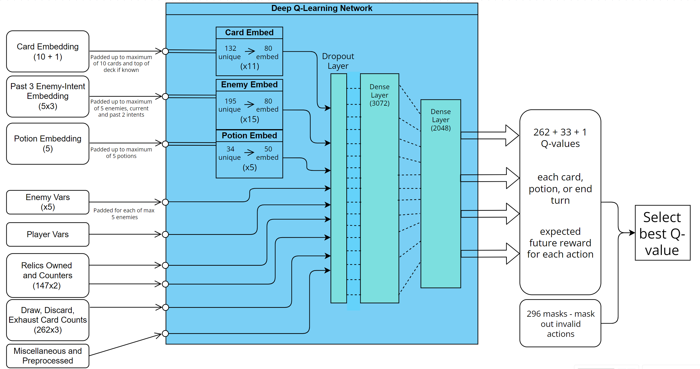

SLAY THE SPIRE - MACHINE LEARNING
Preface:
For this project, I created a C++ replica of Slay the Spire, a popular roguelike deckbuilder. The replica is as close to a 1:1 recreation of the game as is feasible, and currently consists of all 4 acts, and the full experience for the first character, Ironclad. The game was originally designed to allow a user to interact with, and play through the full game. However it evolved into a Deep Reinforcement Learning (RL) project using multiple TensorFlow models (Python, pybind11) to autonomously learn, play and win the game. As the sole contributor to this project, I was responsible for the design, development and testing of the game and used only the Wiki, and my knowledge from playing the game to build it. The goal was to design the game without influence or knowledge of the game's code.
See C++ part of the project
Project Overview - A Retrospective:
This is probably the project I was most proud to complete; starting with no ML knowledge, learning from the ground up and finishing with a successful model was incredibly rewarding. It seemed like a near impossible task for me at the beginning but a lot of the work was inspired by OpenAI's Paper on Dota 2. Given the rapid development of AI these days, if beating games was at the top of the major companies' lists, we would likely have models capable of playing at superhuman levels in every game. As progress continues, the work here will become more and more trivialised but it will always be the project where I felt most like I was pioneering something.
In terms of the scale of the problem, playing at the highest level here is orders of magnitude more complex than something like chess (you can approximate this). With my limited available compute, the goal was simply to beat the game at its base difficulty without fluke. In theory you can completely split decision-making into: micro (in-fight) and macro (out-of-fight) decisions, but in practice, good players will be considering both at all times. Given the nature of all decisions across the game, there could not be a one-size-fits-all model, therefore the multiple models would need some way to communicate/interact or at least extract knowledge from each other. Finding the right approach required a lot of problem-solving and many iterations. The final result included three distinct models:
- Micro model - Deep Q-Learning Network using RL, handles all in-fight decisions, outputs the decision leading to the highest expected reward
- Macro model - Traditional Neural Network, handles all out-of-fight decisions, outputs the expected floor the run will end at for the given game state
- Prediction model - Traditional Neural Network, extracts the expected HP loss for any given fight for the given game state, feeds into the Macro model
Ultimately, the project succeeded in beating the game over 100 times before training was stopped. Despite all of the ways it could be improved, it was a great success overall.
Proof of Concept - Starting Small:
The first goal was to build a model to pilot a fixed deck, and beat one of the first fights in the game with as much health remaining as possible. Randomly playing cards until out of energy each turn resulted in 59.3 +/- 7.1 HP remaining (intuit this as an average with spread as opposed to error on a 'true' value, the nature of the fight prohibits continuous data treatment). My personal testing reached 73.6 +/- 3.1 HP. A small DQN of 2 layers of size 24 was constructed, everything was simplified, inputs were discretized (e.g. strength of +5, +10, +15 were converted to 3 bools) and around 20 input variables represented the Markov state. Each action corresponded to playing each unique card, or ending turn (masking out unavailable options) giving 5 possible actions. Reward structure was varied a lot throughout the entire project; the core idea was to avoid strategic rewards that might bias towards a certain playstyle, in order to allow the model to find its own way. Therefore generally, all rewards were minimal aside from a reward at the end of the fight representing the amount of health remaining. Training and hyperparamter optimization resulted in 72.1 +/- 2.8 HP, a conceptual success and a solid starting point, especially for a small model.
Pillars and Goals:
Avoid compromises wherever possible. It seemed like the worst way to start a ML project like this is to exclude or not account for features of the gamestate that are difficult to process. There were always going to be challenges too far out of reach, so taking shortcuts where unnecessary would undermine the prospects of the model to learn. As with the C++ side, I was never certain how far the project would go, but the lofty goal in mind was to, at least once, beat the game fully autonomously. As a human, games typically last upwards of 45-60 minutes, between 1 and 2 hours with careful thought, and more with extensive thought. Beating the game would not be a fluke result, even when making full use of strong mechanics, careful pathing and competent deck piloting is still required. Almost all of the few thousand decision points in a full run are meaningful and impactful.
Technical Design:
All the decisions in a run of the game can be divided into three categories: hard-coded responses (used sparingly and primarily for simple or rng random map events), micro fight decisions (every decision made during fights) and macro run decisions (everything remaining outside of fights). Micro decisions are governed by a DQN which gives an approximation of the future expected reward for playing each card. Multi-step cards (cards that require you to choose a target or card after casting) are simulated when chosen, and the most optimal sub-decision is chosen. The macro model makes use of two traditional NNs: one that gives the expected health loss and a measure of variance for every fight in the game, and the other that gives the expected end floor. The expected health losses feed into the main macro model for expected end floor, which is used to evaluate simulated macro decisions and act optimally. The machine learning side is written in python and integrated with use of the pybind11 library.
Micro: Input size: 1325. Action space size: 296. Total trainable parameters: ~18,000,000. Uses Mean Squared Error (MSE) loss function and Adam optimizer. Macro: Input size: 878. Action space size: 1. Total trainable parameters: ~9,000,000. Uses Huber loss function and Adam optimizer.
Model Training (Micro):
It is difficult to pinpoint the internal weak points of large NNs like this without extensive research. Aside from analysing the embedding layers, the only real metric for evaluating progress is the end health after each fight. Hence model improvement was defined by increases in average end healths over large samples. You could spend an inordinate amount of time working on other measures of progress and 'correct' decision making, but the nature of the game prohibits straight-forward 'this is always good' statements in a lot of cases.
- Curriculum learning: The model struggled when thrown into the deep end of random decks across all fights. The root idea behind curriculum learning is to allow the model to learn a concrete understanding of the more simplistic facets of the game and avoid premature convergence to suboptimal policies. The method was employed in two ways: the first, six stages were created, each of increasing difficulty.
- First fights only, starter deck with 0-2 potions, 0-2 random extra cards.
- First act only, not boss, premade decks each leaning into synergies/combos, random potions and colourless cards added.
- All first act enemies, some additional premades, random cards/relics removed to check ability without necessary synergetic pieces, replaced with randoms.
- Act 1 and 2, no boss, mixture of premades and randomly generated within appropriate bounds
- All act 1, 2 and 3, all random
- All acts (including act 4), all random decks, except mixed with premades for the hardest end bosses.
- Double DQN: A fairly simple method to improve stability and provide more explicit increments for training progression. Two models are used in tandem, one is used for the decision making whilst the other is trained and updated. At specified intervals the decision-making model is updated to have the same weights as the target model. The model was, at times, plagued by exploding losses and diverging rewards. Double DQN and adjusting the gamma value addressed these issues.
- Gamma value: Gamma can be intuited as how far ahead you want your model to think, it scales down the impact of future rewards. Given that the primary reward occurs at the end of a fight, higher gamma values are preferable. Exploding losses required a lower gamma value for model stability. Otherwise gamma should only be limited to aptly reflect the randomness in the game; the model should only look as far ahead as it can predict with sufficient statistical accuracy.
- Exploration vs. exploitation: two things about the game are relevant here; first, there is a caveat to almost every 'bad' choice that makes it sometimes correct, this includes ending your turn early. Second is that ending your turn early in most cases is the fastest way to die and it is always an option. Traditional exploration uses a decreasing term, epsilon, to enable random decision making. Statistically, this random outcome is going to be 'end turn' more often than any other. In ~95%+ of cases, ending turn early can make the entire fight fruitless for learning and exploration. So I developed an alternative random decision maker, still governed by epsilon. It is somewhat akin to creating soft max values for each action, each q-value is translated to a weight for how often that option is randomly selected. The function was built to emulate my intuition for how often each action should be chosen, based on its q-value. Ending turn would be chosen much less frequently and the model could mostly focus on discerning between the two or three best options.
- Embedding sizes: Typically embedding sizes are no smaller than 50. There are general rules but it's largely case specific. An intuitive way to think about embeddings in this case is to imagine each output as a descriptor of a singular card feature, whether that be its type: attack, skill, power, or how much damage it does, how many cards it draws, exhaust synergy etc. On investigating dot products for each card's embedding output, originally using size 50 seemed insufficient, likewise for enemy-intent embedding. Similarities which should have been present, were not. Using size 100 proved too complex for the model, likely due to the nature of the containers and data augmentation, it was too difficult to learn features and relationships. Size 80 permitted the model to flourish, whilst also demonstrating a large portion of the expected relationships when evaluating dot products.
Challenges and Solutions:
- Structuring Inputs
For the micro, the problem of aptly representing the cards in your hand, deck, draw, discard and exhaust is non-trivial. It seemed that using a trainable embedding layer to treat each card categorically would be beneficial so the model could implicitly learn the functions and similarities of cards. However since only the hand has a limited size (10), and the rest of the locations are technically unlimited in size, coupled with the fact that their order is sometimes known, sometimes random, sometimes relevant and sometimes not, it seemed best to use counts for each card in each location. When using counts, you cannot capture any temporary energy cost or card stat changes, but this was the best compromise to avoid an excessive amount of padding for the other locations. Meanwhile the cards in hand (which are the most relevant) can maintain this information.
For the macro, the only hard part is finding a way to represent the node map. The idea was to find a discretized but not overly simplified representation of all the potential paths, whilst not over-processing or bloating the input too much. There are three main factors influencing path choice: flexibility, safety, and potential resource acquisition. So at each floor, every path permutation is re-evaluated for its merit in these three categories and provided alongside a one hot representation of the immediate upcoming floors and other relevant info. The alternative to this would be a more shortsighted approach but, given that it was not too computationally expensive, having the best full path in mind seemed sensible.
- Complex/Multi-step decisions
For micro, any time a card is played and requires a subsequent decisions, this is a deviation from the base model's action space, which evaluates future expected rewards for each of the 131 cards and their upgraded versions, or ending turn. At the time of deciding how to deal with these multi-step decisions, I wasn't familiar with Hierarchical Reinforcement Learning (HRL) which is a solution i might explore in future. Nevertheless, I liked the idea of simulating all of the sub-decision choices and choosing the best.
For macro, the hardest part was the beginning and trying to formulate a way to approach the varied number of decisions in a run. Despite the upfront downsides of using a basic NN and simulating choices it seemed much more feasible than attempting a HRL DQN model and making and training sub-models for every unique question event, shop, all campfire permutations, card choices, pathing. The complexity would have likely spiralled out of control, with no guarantee that all the models could converge on anything. Using a NN to take all the state info and approximate the likely floor the run will end on allows versatility of use for every situation, where a sample of random outcomes can be substituted for unknown results.
Weakest Part of the Macro Model:
- Simulation is obviously more computationally expensive than calling a DQN model for the best action. This is most evident in making decisions in shops. For reference, in shops you spend any acquired gold to acquire cards, relics, potions or to remove a card. Oftentimes you will buy multiple items and a DQN could implicitly know that it could buy one thing, and then immediately buy whatever else it wants. This knowledge is not inferred when simulating. The current solution is to iterate through all permutations of single item, and dual item purchases and decide the best map path for each. This is by far the slowest part of each run but the justification is that shops are one of the most prominent places for skill expression and learning. As a player, an intuitive example is knowing that if you buy Card A and Potion B, you'll be strong enough to change path to fight a harder elite enemy for better rewards. Any shop solutions more crude than this would essentially prohibit this kind of strategy. The reason I consider this the weakest part is because shops take a disproportionate amount of the total time (since been altered, majority of the time was spent recalculating the best remove to pair with each item, strictly speaking necessary (panic button might want defend remove, hemokinesis might want strike remove) but too expensive) for each run and cannot pre-calculate any more than two purchases. After making either a single or double purchase, you essentially re-enter and re-calculate the entire shop from the new starting position.
- The expected end floor will never fully converge and until fully trained, will be too much of an average, as opposed to a reflection of the best likely path. Encoding so much information into a single value in a game with significant RNG is questionable, but I think the framing that the value is a rough depiction of how good a position you are in, and how bright your prospects are, makes it sufficient. Especially when used comparatively, as it is when simulating.
Weakest Part of the Micro Model:
- The simulation of playing multi-step cards is sub-optimal compared to something like HRL but the original motivation still stands to an extent. When looking at the sub-decisions in question, one stood out as particularly difficult: choosing any number of cards in hand. I tried and failed to imagine what the action space would look like aside from including every possible permutation. One potential option was to have an action space of size 20 where each card slot has a yes or no option. The reason for not doing this is the same reason why the base model doesn't give the index of the card in hand and instead gives the expected value for each unique card. Whilst it might be possible to train the model to do this, I imagine it as if the model is trying to encode the results for every card into each of the 20 values. This means its complexity is equivalent to having 260 yes/no's and 10 of them -> 260 x 20 possible. At this point you begin to question the return on the computational investment for a sub-decision only used in a couple of places.
- Potions, cards and enemies are represented categorically and are processed through embedding layers. These objects are held in containers of limited size where they should be treated equally regardless of order (imagine cards in hand of size 10), so the input data is shuffled (technique known as data augmentation) so that each 'slot' is equivalent. Theoretically this all makes for a good solution, but training with data augmented embedding weights takes a significant amount of time before they truly are equal. One of the repercussions from this is when simulating, each option needs to use the same arrangement else the variation between positions can be the deciding factor so data augmentation is turned off for simulating fight sub-decisions. There are a variety of problems here, most notably that the variance between 'slots' is high enough that it can be the deciding factor.
Avoiding Bias:
Most eminently in the micro model, I was always very conscious to avoid unintentionally presupposing certain playstyles or tendencies for the model to get it off the ground. Macro and micro models each have a single main goal in mind: winning the run and minimising health loss, respectively. Other sub-goals, that don't align with specific playstyles in fights include setting up relic counters and executing the fatal permanent effects on cards (gaining gold, max HP, perm card stats). Despite the long time horizons before a reward can be given in fights, and the disconnect between early floor states and the final floor reached, any other intermediate goals or rewards impart player bias. In fights, the nature of the game is that almost every "bad" action has a caveat that makes it sometimes correct and thus it's very difficult to make sweeping statements that you can apply to the model in the form of rewards. That said, due to repeating deficiencies in certain areas, negative rewards were implemented to dislodge the model from tendencies which were throttling performance.
Separating Micro and Macro:
For those more familiar with the game, it is understandable to take issue with the clear distinctions made between both models, and the fact the macro state info has no bearing on micro decisions. The most notable example where this might be a problem is where clear probabilities could be assigned to a few outcomes. A human might understand that, given upcoming future map events, taking a low variance 'safe' choice might guarantee a run loss and 'high-rolling' is the only way to continue. Likewise, balancing the upsides and downsides of gaining max HP or gold, versus setting up each relic counter versus losing health mid fight is not possible without macro info. Accounting for this was not a possibility at earlier stages and would require significant model adjustments and extensive training. Potion use can often be the difference maker in runs, and I don't currently have a great way to handle it. Even when the micro model is permitted to use potions with no penalty, it still struggled to learn optimal use, so certain potions were designated to always be used at the start of the fight. I've iterated on a several designs for potion management, the current is as follows: check if you are likely/guaranteed to receive a potion as a reward, permit the use of at least one potion. Use the micro model to evaluate all possible permutations of potions you hold. Then, in short, find the best q-value with the fewest potions used, and use at least one if permitted to, regardless. If using no potions is sufficient, then all are temporarily removed, potions are added back at the end of the fight.
Card Embeddings:
The output of the micro model embedding layers can be processed to evaluate similarities between cards. By normalizing and finding the dot product between each card, you can create a representation of commonalities in a 2D plane. The embedding layers likely have a lot more room for improvement, also, the embedding is a reflection of the value that card has in the hand, not its effect when played.

Project Outcomes:
Successfully built and trained an AI to handle every fight in the game. Using a supplementary model to approximate expected health loss in each fight for a given macro state, constructed a macro model to estimate the expected floor the run will end. These are used together to simulate and select the most promising options and the entirety of an Ironclad run can be played faithfully and autonomously. The model has won the game over 100 times at this point and performance is ever-improving. Still yet to evaluate a static model, however during training, highest average end floor over a consecutive sample of 100 runs: 24.8. There were 4 successful runs in this 100 run period.
Conclusion:
Still work to be done to improve model. In almost all cases, simulation is second best to traditional RL with a DQN. HRL could definitely help solve a lot of the more specific cases, although not all. For reference, double descent is a phenomena whereby model performance reaches a local minima as more and more model parameters are added (somewhere around where the degrees of freedom of the model match that of the data noise). Past this point, more parameters lead to a decaying improvement in performance. In terms of double descent and number of trainable parameters, I currently have no notion of where on the curve the model exists, however it is likely before the minimum. Since run performance is evaluated on averaging end floors and the high variance in results, progress is akin to an upward trending sinusoid. It's also fairly time consuming, so even partially mapping a double descent curve is not on the horizon.
Notes and Future Work:
Very happy with the project overall, especially seeing through such a large solo project from start to finish. Obviously there are three other characters in the game and 20 progressive difficulty modifiers that could be worked on. On the ML side, training is ongoing but slow in a couple of ways, namely current potion management re-adds hidden potions mid fight. This prohibits micro training since successive states can no longer be consistently connected. With the limited levels of compute used for this project, proper statistical analysis of model sizes and parameters is a much longer term optimization goal.